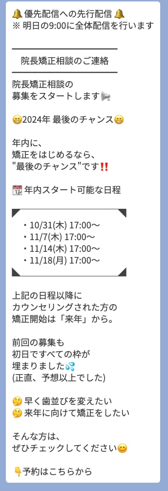
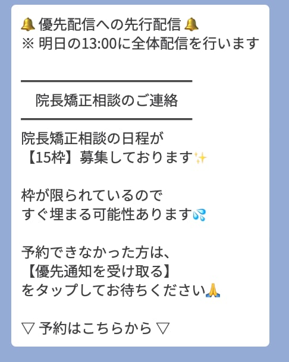
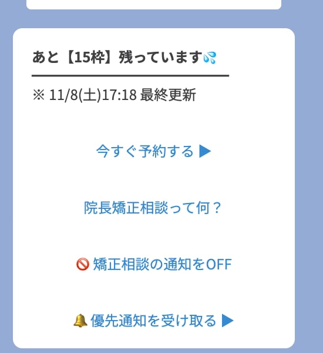
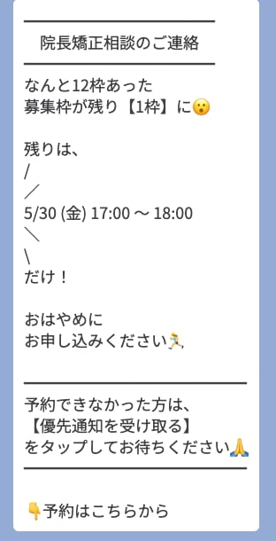

「お問い合わせ率」と「来院率」の両方を、同時に底上げする。
メール予約だけでは取りこぼしている興味・予約・来院を、LSTEPで仕組みとして拾い上げます。
「お問い合わせ率」と「来院率」の両方を、同時に底上げする。
メール予約のみの現状から、LSTEP（LINE公式アカウント＋ステップ配信）を導入することで、 興味を持った方が 離脱せず予約まで到達する導線と、予約した方が 当日キャンセル・無断キャンセルせず来院する仕組みを、ひとつのプラットフォームで構築します。
新宿院から先行導入し、効果検証ののち他院展開を想定しております。
※下記は一般的なメール予約導線で起こりやすい離脱パターンであり、新宿院の固有の数値はキックオフ後の実データで検証します。
| フェーズ | 想定される離脱要因 |
|---|---|
| ① 興味を持つ | 「あとで予約しよう」と離脱した方への再アプローチ手段がない |
| ② 予約フォーム入力 | 入力項目が多くスマホでは離脱しやすい |
| ③ 予約完了 〜 来院日 | 予約から来院まで数日〜数週間空くと熱量が冷める |
| ④ 来院当日 | リマインドがメール1通のみで見落とされやすい |
【観測済み】お問い合わせは入るが、日程調整の連絡が届かず消える
現在の予約フォームは「日程を自由記述」で送信する問い合わせ型のため、ユーザー側で予約は完結せず、医院からの折り返し連絡を経て初めて日程確定します。
この「折り返し」が 電話に出られない／メールに気づかない／メアド未入力で連絡できない といった理由で何度も途切れている、というのが新宿院で実際に起きている主たる問題です。
このボトルネックは仮説ではなく 確定課題 として優先的に解決します。加えて、その周辺で起きている可能性のある仮説も並列で検証し、真因を取り違えないこと を本提案のスタンスとしています。
現フォームは日程が自由記述のため、送信＝予約完了ではなく 医院からの折り返し前提 の問い合わせ型。電話に出られない／メアド任意で連絡手段がない／メールが迷惑メール扱い等で 連絡が一度途切れた瞬間に来院ゼロが確定 する構造になっている。
日程確定後、来院日までメール1通のみで熱量維持できていない。新宿の競合広告に再露出して心変わりしている可能性。
新宿は矯正クリニックの広告出稿数が全国トップクラス。折り返し待ちの間に競合広告に晒され、別院で相見積もりを取って消える層が一定数存在。
「道に迷った」「電話で変更しづらい」「キャンセルしたいが言い出せない」など、当日の小さな摩擦が無断キャンセルにつながっている。
| 現状の流れ | 起きている問題 | LSTEP導入後の変化 |
|---|---|---|
| ① ユーザーが希望日時を自由記述で送信 | 送信後、ユーザーは「あとは医院からの返信待ち」状態。送信した瞬間から熱量が下がり始める。 | 送信直後にLINEで自動応答。「24時間以内にご連絡します／その間に院長からのご挨拶動画をどうぞ」と即時に体験を返す。 |
| ② 医院から電話で折り返し | 仕事中・移動中で出られない。留守電を残しても折り返しがない。2〜3回繋がらず終了するケース。 | LINE上で日程候補を直接送付。ユーザーは見たタイミングでタップして確定。電話の取りこぼしに依存しない。 |
| ③ メアド未入力 / 任意の場合 | 電話以外の連絡手段がなく、繋がらなければ詰む。 | LINE登録さえあれば連絡が必ず届く。メアドの代替インフラとして機能する。 |
| ④ メール返信が来ても気づかない | 迷惑メールフォルダ／プロモタブに振り分けられて開封されない。 | LINE通知は端末ロック画面に直接表示。開封率がメールの3〜5倍。 |
| ⑤ 連絡途絶 → 自然消滅 | 追跡手段がなく、見込み客リストから抜け落ちる。 | 「未対応タグ」で自動管理。一定期間返信がなければリマインド配信を自動投下。取りこぼしゼロ。 |
キックオフ後、いきなりLSTEPを構築せず、まず以下の手順でデータを取り「LSTEPで何を最優先で解決すべきか」を確定させます。
本丸課題の規模を定量化。直近3ヶ月の問い合わせ件数／折り返し成功数／日程確定数／来院数を集計し、「どこで何件落ちているか」を可視化。
受付スタッフ・院長への聞き取り、過去キャンセル者へのアンケート（可能な範囲で）で、連絡途絶の典型パターンを把握。
検証結果に応じて、自動応答・日程候補配信・未対応リマインドの設計を最適化。「打ち手のためのLSTEP」ではなく「課題解決のためのLSTEP」を構築。
LSTEPは、本丸課題に直接効きながら、周辺仮説にも同時に効く一手です。
本丸（折り返し連絡の途絶）を LINE通知＋未対応タグの自動運用 で潰しつつ、仮説A（予約後フォロー）・C（当日オペ摩擦）にも直接、仮説B（競合圧）にも「先に関係構築する」形で部分的に効きます。真因がどれであっても、無駄打ちにならない投資として最初の一手の優先度が高いと判断しました。
| 比較項目 | メール | LINE（LSTEP） |
|---|---|---|
| 開封率 | 10〜20% | 60〜80% |
| 即時性 | 数時間〜翌日 | 数分以内 |
| ブロック率 | 高い（迷惑メール扱い） | 低い |
| セグメント配信 | 困難 | タグで自在 |
| 予約リマインド | 見落とされやすい | 通知で気づかれる |
| 双方向のやり取り | 心理的ハードル高い | チャット感覚で気軽 |
矯正治療のように「検討期間が長く、来院前の不安が大きい」サービスほど、LINEの効果が高いことが各種実証データで示されています。
登録直後から数日間、以下を自動配信:
→ 「予約する理由」を時間をかけて積み上げることで、当日決断できなかった方の取りこぼしを防ぎます。
| タイミング | 配信内容 |
|---|---|
| 予約完了直後 | 「ご予約ありがとうございます」＋来院方法・持ち物 |
| 前日 18:00 | 「明日はカウンセリングです」＋アクセス地図 |
| 当日朝 9:00 | 「本日◯時にお待ちしております」＋院長メッセージ動画 |
| 来院 3 時間前 | 「あと3時間です」＋万が一遅れる場合の連絡先 |
3段階のリマインドで、無断キャンセル率を大幅に抑制します。
矯正カウンセリングは枠数限定のため、希望者全員を案内できないケースがあります。
「優先通知を受け取る」ボタンを押した方だけに、一般公開より早く新規枠を案内することで:
来院動機・年齢層・進捗ステータスでタグ付けし、配信内容を最適化:
→ 全員に同じメッセージを送らないことで開封率・反応率を高く保ちます。
来院翌日にお礼メッセージ＋Googleレビュー誘導を自動配信。
新宿院のGoogle口コミ獲得スピードが上がる副次効果も見込めます。
「電話するほどでもない質問」を吸い上げる窓口として活用。
費用相談・予約変更などをLINE上で完結させ、問い合わせハードルを最小化します。
弊社で運用代行している矯正カウンセリングの集客事例です。
LSTEPの「セグメント配信 × 希少性訴求 × 即時CTA」の組み合わせで、カウンセリング枠を募集開始から短時間で埋めきっています。




この4枚から学べる勝ちパターン
「興味あり」 → 「優先通知登録」 → 「先行配信」 → 「即予約」
このフローをLSTEPで自動化することで、広告クリックから予約完了までの離脱を最小化しています。新宿院でも同じフレームワークをそのまま流用できます。
新宿院は来院率が特に課題、というヒアリングを踏まえ、以下を重点設計します。
仮の試算（新宿院の現状を仮定した数値）:
| 項目 | 現状（推定） | 導入後（目標） | 差分 |
|---|---|---|---|
| 月間カウンセリング予約数 | 100件 | 100件 | 同等 |
| 来院率 | 60% | 80% | +20pt |
| 月間カウンセリング実施数 | 60件 | 80件 | +20件/月 |
| 成約率（仮に40%） | 24件 | 32件 | +8件 |
広告は出稿を止めれば反応もゼロに戻ります。一方で、LINEに登録してくれた方はクリニックの「友だちリスト」として資産化され、運用すればするほどその価値が増していきます。
新宿院の広告流入や来院者からLINE登録を促していくと、友だちリストは月を追うごとに積み上がっていきます。
1年後には数千人規模の見込み顧客リストが手元に残り、新しい広告費をかけずに矯正以外のメニュー（インプラント・ホワイトニング・小児矯正など）も届けられる状態になります。
※登録数は月間カウンセリング予約 100件＋広告流入＋HP/院内導線からの登録を仮定した試算です。
広告は「使い切り」、LSTEPは「積み上がる」。
運用を続けるほど、リストは増え、コンテンツは蓄積し、過去の登録者を再活性化させるだけで予約が生まれる状態になります。長期で運用するほど、初期費用に対する費用対効果が圧倒的に高まるのがLSTEPの最大の特徴です。
LSTEPでは、ステップ配信で届けた教育コンテンツに誰がどこまで反応したかを全自動でタグ管理できます。
これらのタグに点数を割り当て、合計点で1人ひとりの「興味度スコア」を可視化します。
「全員に同じ案内を送る」のではなく、「その人が今欲しい情報を、その人の温度感で届ける」ことが可能になります。
結果として、配信のブロック率を抑えつつ、HOT層からの予約獲得率を最大化できます。
LSTEPは万能ではありません。経営判断の材料としてフェアであるために、想定されるリスクと対策を併記します。これらのリスクを認識した上で、それでも投資対効果が成立するという判断で本提案を行っております。
「導入すれば必ず成功する」とは申し上げません。
上記リスクをクライアント様と共有し、90日時点で投資判断を再協議できる前提で進めることを、本提案の運用ルールとさせていただきます。
※LSTEP本体のツール利用料（月額数千円〜）はクライアント様契約となります。
※新宿院での効果検証後、銀座・横浜・名古屋・大阪・福岡・札幌へ展開する場合は、2院目以降は構築費を圧縮可能です（過去シナリオの流用が効くため）。
最短5週間で公開、6週目から運用開始を想定しております。
ご検討のほど、よろしくお願い申し上げます。